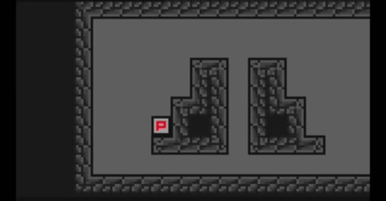
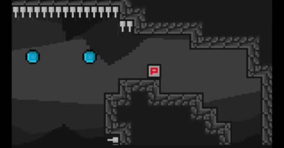
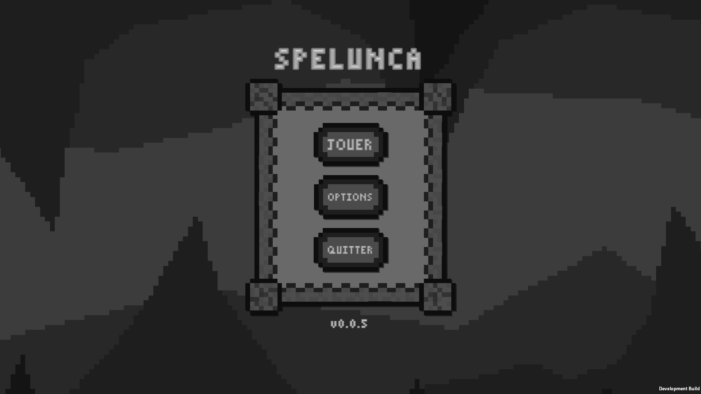

Bonjour à tous, c'est Abdourahmane ! Voici la newsletter 5 ! Si vous venez de découvrir le projet, n'hésitez pas à regarder les newsletters précédentes pour comprendre ce qui a été accompli !
Comparés aux dernières semaines, cette semaine, nous avons développé 3 fonctionnalités au lieu de 2. L'objectif est d'accélérer le développement et d'implémenter plus de fonctionnalité dans la version définitive du jeu. Ainsi, cette semaine a été implémentée le wall slide, l'orbe de dash et le menu principal. Nous avons réalisé ces tâches en divisant l'équipe de développement en 3 groupes.
Le wall slide est une nouvelle fonctionnalité de déplacement du joueur. Il lui permet de glisser sur un mur lors d'une chute. Pour ce faire, le joueur a juste à mettre son joystick ou appuyer sur la touche du clavier en direction du mur. Si le joueur est assez proche, alors sa chute sera ralentie.
L'orbe de dash, permet au joueur, lorsqu'il rentre en collision avec celle-ci, de récupérer son habilité à dash. Cette fonctionnalité amène d'autres possibilités comme il est visible sur l'exemple ci-dessous.
Enfin, la dernière fonctionnalité implémentée est le menu principal. Vous pourrez reprendre votre partie en cliquant sur le menu jouer. Nous avons commencé à développer la section "options" de ce menu, mais elle n'est pas encore prête à être dévoilé. Vous pourrez aussi quitter le jeu grâce au dernier bouton.
N'hésitez pas à suivre le développement et à nous poser des questions sur notre serveur Discord.
Merci d'avoir lu cette troisième newsletter et à la prochaine !
Team Spelunca.
Rédacteurs : Abdourahmane GADIO et Nathan DELORME